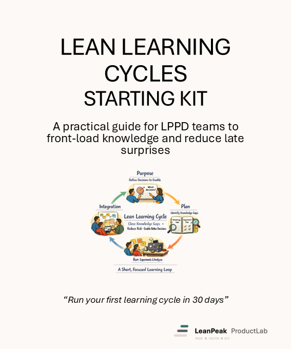

Starter Kit · Lean Learning Cycles
A practical guide for LPPD teams to front-load knowledge and reduce late surprises.
Run your first learning cycle in 30 days. Free to download — no sign-up required.

Why it matters
Most product and process problems are traceable to decisions made before enough was known — a materials choice locked before testing, a process concept committed before the tolerances were understood, a design direction frozen while critical CTQs were still uncertain. The cost arrives later: late-cycle engineering changes, tooling rework, warranty claims, and delayed launches.
Lean Learning Cycles provide a structured way to reduce this uncertainty early. Instead of waiting for problems to surface at milestone reviews, teams frame explicit knowledge gaps as learning questions, design focused tests, run them in short cycles, and review findings at regular integration events. The result: better decisions made earlier, with evidence.
80%
of late-cycle engineering changes trace to decisions made before sufficient knowledge was in place — a problem Lean Learning Cycles are designed to prevent.
30 days
is enough to run your first real learning cycle, review the findings at an integration event, and see how the method changes the quality of decisions your team makes.
What’s inside
The kit covers the full Lean Learning Cycles method — concept, tools, worked examples, and a practical startup path. Twelve sections, two worked examples, three templates.
Foundation
Why Lean Learning Cycles matter
The cost of late knowledge. Why front-loading beats back-loading.
Foundation
What a Learning Cycle is
Definition, structure, and how a cycle differs from a project task or experiment.
Method
The two-part method: Preparation & Execution
How to frame a cycle, assign ownership, and run it to a clear integration date.
Method
Cadence and integration events
How learning cycles plug into weekly reviews and portfolio-level integration events.
Method
Strategic vs tactical learning
How to distinguish knowledge gaps that change direction from those that refine execution.
Method
Test-to-design logic
Designing tests that answer design questions — not just confirming what you already believe.
Template
Learning Cycle Canvas
One-page canvas: question, hypothesis, test approach, owner, integration date, and findings.
Template
Learning Question Backlog
A simple backlog format for managing and prioritising open questions across a project.
Template
Integration Event Checklist
A checklist for preparing and running integration events that turn findings into decisions.
Examples
Two worked examples
A hardware learning cycle and a process/industrialisation learning cycle, fully filled in.
Startup
30-day startup plan
Week-by-week steps to frame your first cycle, run it, and review the result.
Practice
Roles, facilitation, and common mistakes
Who does what, how to run the integration event, and the pitfalls to avoid in the first 90 days.
Who it’s for
The kit is written for people who are responsible for what gets built and how — not for those who observe from the outside. It assumes you have real projects, real knowledge gaps, and real decisions to make.
Product development teams
Working on hardware, software-hardware systems, or complex products where CTQ uncertainty is high early in the programme.
Industrialisation & manufacturing engineering
Teams preparing process concepts, evaluating assembly approaches, or developing 3P alternatives before tooling is committed.
Chief engineers and project leaders
Leaders who want to improve the quality of decisions in their programme — earlier, with evidence, before commitment costs are high.
Lean coaches and LPPD practitioners
Coaches introducing learning cycles into a team for the first time, or refreshing a team that has drifted back to task-based working.
Teams working in hardware and Lean 3P contexts
Especially relevant for teams using 3P events, running process alternatives, or integrating design and manufacturing early.
Preview — Section 1
Conventional development reviews ask: Are we on schedule? Lean Learning Cycles shift the question to: What do we know now that we didn’t know last month — and how does that change what we do next?
The underlying problem is that most development processes treat uncertainty as a planning failure rather than an inherent condition of early-phase work. Teams commit to concepts before CTQs are understood, allocate budget to detailed engineering before the architecture is validated, and discover fundamental problems at system-level tests when the cost of change is highest.
A learning cycle is not a test. It is a structured act of inquiry: a clearly framed question, a designed means of answering it, and a committed integration date at which the answer is reviewed and acted upon.
Lean Learning Cycles make the knowledge-building work visible and deliberate. Every open question becomes a framed cycle. Every cycle has an owner, a test approach, and an integration date. Every integration event converts findings into decisions. The system builds knowledge in parallel with — not after — design and process work.
Preview — Section 2
Every learning cycle follows two phases. Preparation is where the thinking happens — before any test is run. Execution is where the test is run and findings are captured. Both phases feed the integration event, where findings become decisions.
Phase 1
Preparation
Phase 2
Execution
The integration event is not a status meeting. It is a structured review at which one or more cycle owners present what they learned, and the team or chief engineer makes an explicit decision based on that learning. Findings without decisions are waste.
Preview — Section 3
The Learning Cycle Canvas is the single-page working document for one cycle. It keeps the team aligned on what is being asked, why it matters, how it will be tested, and what will be done with the result. The kit includes a blank canvas you can print or share digitally.
Learning Question
The precise question this cycle will answer. One question per canvas. Written as a testable question, not a task.
Current Hypothesis
What the team currently believes — and why. The test is designed to challenge this.
Falsification Criterion
What result would disprove the hypothesis? Be specific before running the test.
Test Approach
Minimum viable test: what is run, how, and at what scale. No more complexity than needed.
Cycle Owner & Integration Date
One named owner. One committed date for presenting findings at the integration event.
Findings & Decision
Completed after the test. What was observed — and what was decided as a result.
The canvas is intentionally minimal. It takes 15–30 minutes to complete the Preparation section and keeps the cycle owner focused on the question, not the process. The full canvas with a worked example is included in the kit.
Preview — Section 4
This example follows a product development team working on a thermal management problem. The question is strategic — the answer will determine a major design direction before the concept phase closes.
Preparation
Will passive convection cooling meet our 85°C maximum junction temperature requirement at peak load on the current housing geometry?
The team believes passive cooling is sufficient based on initial thermal modelling. The model has not been validated against physical hardware.
Bench test with representative housing geometry (no full prototype required). Run at peak load for 90 minutes. Measure junction temperature at three points. Compare against 85°C limit with 5°C margin.
Execution
Thermal lead — results to integration event in 12 days.
Junction temperature reached 91°C at peak load. The passive cooling hypothesis is falsified. Hotspot identified at rear corner of housing — geometry not captured in the model.
Strategic — this result changes the concept direction. Passive cooling will not meet the CTQ at current geometry.
Team commits to active cooling. Housing geometry revision added to Learning Question Backlog. Decision made 14 weeks before the traditional gate review would have surfaced this finding. Tooling commitment avoided.
Preview — Section 5
This example follows an industrialisation team evaluating a welding process for a structural assembly. The question is tactical but time-critical — tooling design decisions depend on the answer.
Preparation
Does weld sequence B (inside-out) reduce distortion below our 0.4mm flatness tolerance on the structural frame assembly?
The team believes inside-out sequencing will reduce distortion based on experience with similar gauge material. Not tested on this geometry.
Two test pieces at full scale, actual material spec. Sequence A (current) vs Sequence B (inside-out). Measure flatness at 6 points. Target: <0.4mm deviation. Cycle time: 8 days including lab availability.
Execution
Process engineer — results to weekly process review in 9 days.
Sequence A: mean distortion 0.71mm (out of tolerance on 4 of 6 points). Sequence B: mean distortion 0.27mm (within tolerance on all points). Hypothesis confirmed.
Tactical — confirms direction, does not change concept. Sequence B to be used for all production tooling design.
Sequence B adopted. Design rule documented and added to knowledge reuse library. Tooling fixtures designed around Sequence B clamp positions. Rework risk on 40-unit initial production run eliminated before commitment.
Preview — Section 6
You do not need a training programme, a consulting engagement, or a new process framework to start. You need one real question, one cycle, and one integration event. The 30-day plan in the kit walks you through exactly that.
Days 1–5
Find the question
Identify the most pressing knowledge gap on your current project. What would change your design or process direction if you knew the answer? Frame it as a precise learning question.
Days 6–10
Complete the canvas
Fill in the Learning Cycle Canvas for that question. Agree on the minimum viable test, assign an owner, and set an integration date within the next two weeks.
Days 11–25
Run the cycle
Execute the test as designed. Capture data. Prepare a 5-minute finding summary. Resist the temptation to expand scope or delay the integration date.
Days 26–30
Review and decide
Present findings at your next integration event. Make an explicit decision. Record it. Identify follow-on questions and add them to the Learning Question Backlog.
After 30 days, most teams find they want to run three or four cycles in parallel. The kit includes guidance on how to manage a small backlog, assign ownership across the team, and escalate from tactical to strategic questions as confidence builds.
Get the Lean Learning Cycles Starting Kit and use it with your team to frame the right questions, run structured cycles, and improve decisions with evidence. Free PDF — no sign-up required.